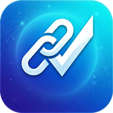

Проверьте ссылку, сообщение или файл до того, как станет поздно
CheckLink оценивает риск по признакам мошенничества: поддельные сайты Kaspi, Halyk и eGov, «служба безопасности банка», «родственник в беде», опасные APK. Всё считается прямо в вашем браузере — ничего не отправляется.

Приложение CheckLink
Проверяйте сообщения прямо из WhatsApp и Telegram: «Поделиться» → «Проверить в CheckLink». Сканер QR, Щит и чат QuasarAI всегда под рукой.
Экспресс-проверка
Ссылка, текст СМС или сообщения, файл или QR-код с фото. Результат — оценка риска, а не гарантия.
Опишите, что говорил звонящий, — оценим сам разговор, а не только номер. Нажмите на подходящие фразы или напишите своими словами.
Инструменты
Разберите адрес сайта по частям и проверьте надёжность пароля — прямо в браузере, ничего не отправляется.
🔎 Разбор адреса
Кому на самом деле принадлежит ссылка. Владелец — это часть прямо перед зоной (.kz, .com), а не слова в начале адреса.
🔑 Надёжность пароля
Пароль проверяется только в этом браузере и никуда не отправляется.
Хороший пароль: от 12 символов, буквы разного регистра, цифры и символы, без имён, дат и слов из словаря. Для каждого сайта — свой.
Тренажёр кибербезопасности
QuasarAI собирает случайные ситуации: фишинг, фейковые сайты, социальная инженерия, вредоносные файлы. Ответ проверяется сразу, с разбором ошибок.
Новые схемы мошенничества
Короткие модули по свежим схемам: найдите подвох в настоящем сценарии, выберите действие и запомните главное. Около 2 минут на модуль.
Мошенничество в цифрах
Официальная статистика Казахстана за январь–ноябрь 2025 года: интернет-мошенничество растёт, а самые частые схемы — те, которые проверяет CheckLink.
База знаний
Как работают схемы обмана и что делать — коротко и понятно.
Полезные советы
Словарь: что значат эти слова
Спросите QuasarAI
Помощник CheckLink: вставьте подозрительное сообщение или задайте вопрос. Без регистрации и платных сервисов.
🆘 Если вас обманули
Действуйте сразу: от первых минут зависит, удастся ли остановить списание. Звоните только по официальным номерам — с обратной стороны карты или из приложения банка.
Что случилось?
Банк — только по номеру с обратной стороны карты или в официальном приложении. Не перезванивайте на номера из сообщений.